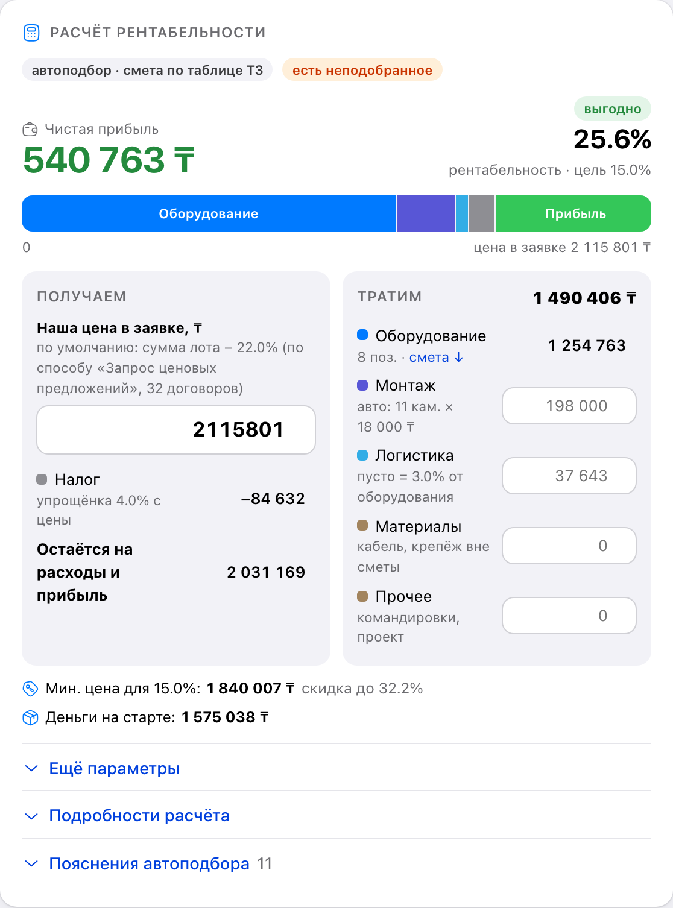
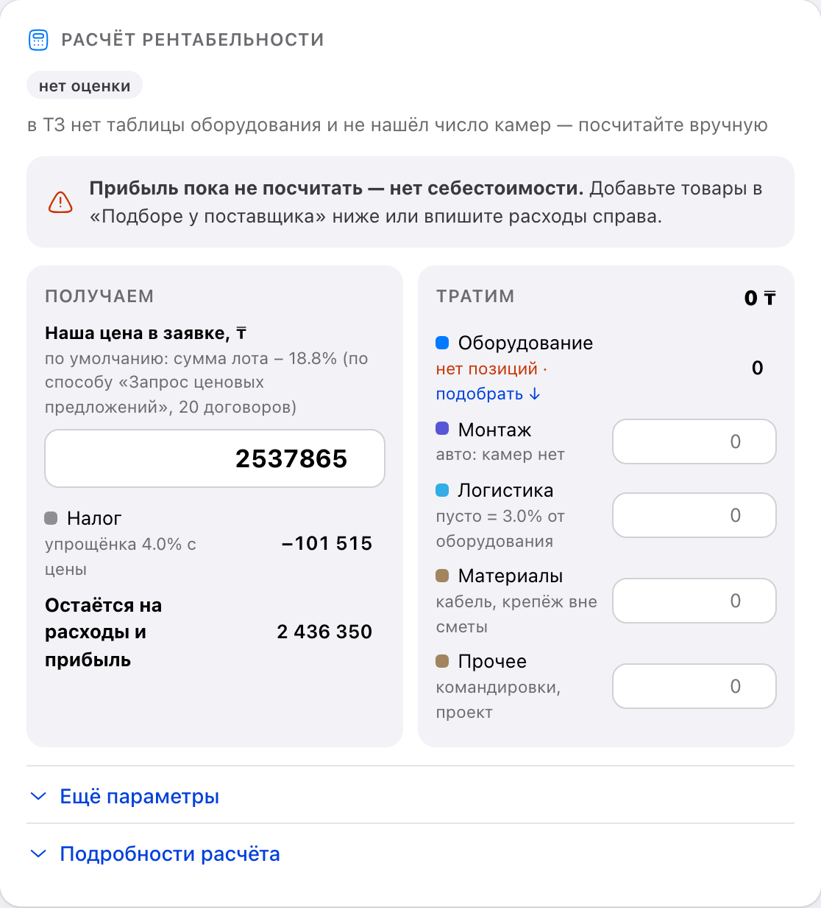
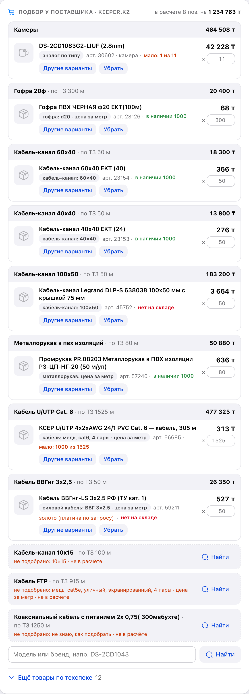
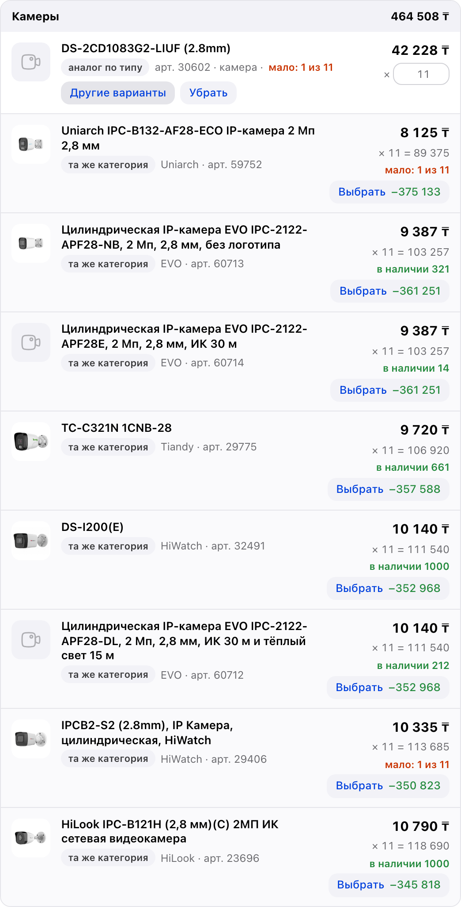

24.11.2026 · помощник по госзакупкам · localhost:8765 · выбраны варианты B + D (расчёт) и 2 + 1 (поставщик)

Лот в Жумекене (11 камер): прибыль 540 763 ₸, 25,6%, «выгодно». Полоса показывает, что большая часть цены уходит на оборудование. Ниже — мин. цена для 15% и деньги на старте.

Лот без таблицы в ТЗ: вместо 96% — честное «нет себестоимости». Расходы можно вписать прямо в колонке «Тратим».

Подбор по строкам ТЗ. Внизу пунктиром — строки, которые автоподбор не нашёл, с кнопкой «Найти».

«Другие варианты» к камере: на кнопке разница в сумме по строке. Проверка: выбор другой камеры поднял прибыль с 540 763 до 927 150 ₸. После проверки расчёт лота возвращён к автоподбору.
/api/supplier/similar?article=…. После обновления кода сервер нужно перезапустить.HYPERLINK "…" в названиях строк ТЗ теперь скрывается.